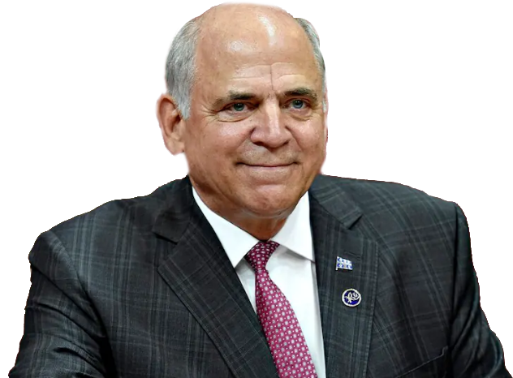

SOBRIÉTÉ ÉNERGÉTIQUE
LE jeu

Bonjour, je suis ton superministre Fitzgibbon. STP, aide-moi à forcer la sobriété énergétique des citoyens afin que mes amis propriétaires d'alumineries ne manquent pas d'électricité que je leur vends à rabais. Afin d'y parvenir, c'est très simple. Dès que tu vois une lumière qui s'allume à travers une fenêtre, tu appuies sur cette dernière afin de couper le courant.
COMMENCER